Hard Candy Magazine —
An Overview
A magazine that explores the mature and the immature. Hard Candy takes content normally found in children’s media and “adultifies” them with imagery mixed with sexual connotations.
Type
Art Direction & Editorial
Role
Research, Photography, Illustration, & Visual Design
Tools
InDesign, Illustrator, Photoshop, Lightroom, & Canon 6D
Duration
September - December 2016 (3 months)
In intense emotional states, we resemble children insofar that we have trouble distinguishing fantasy from reality. Imagination, and hence illusions, play a greater role in emotions than in actual intellectual deliberations.
Aaron Ben-Zeév, Psychology Today
The Concept
The Mature & The Immature
The editorial was ideated to explore the juxtaposition and boundaries between the mature and the immature. Although “immature” is a term used to describe the mentality or development of a child, if one were to make an “adult” sexual or explicit joke, he or she is coined with the same term. The magazine takes things that are normally found in children’s media and “adultifies” them with articles and imagery filled with sexual connotations, taking “child’s play” to the next level.
Target Audience
For the Immature Adult
The magazine targets the immature adult: an adult who has a sense of humour — a little more on the sexual side. However, the magazine does not explicitly contain any inappropriate content, but rather suggests and toys with the human mind to make it think so. So although this magazine targets the immature adult, even a kid could view the magazine and see nothing wrong.
Planning
Dividing & Organizing the Content
Before planning photoshoots and gathering articles, I started organizing the content and pages of the magazine.
1. Introduction: Contains an intro to the magazine's manifesto and about this issue in particular. Also contains a table of contents.
2. The Immature Adult: Explores the juxtaposition between the "immature" and the "mature" and how the two terms coincide.
3. Censorship: Explores the idea of censorship and how the human mind fills in the blanks and how it assumes.
4. Sexual Illusions: Explores the idea of sexual fantasies and illusions that come from human desire.

Process
Sketches — Layouts & Concepts
Through my sketches, I explored different types of layouts and ways I can create illusions through print using type and images. This stage helped me gather an idea of the type of quirky aesthetic I wanted to achieve with the magazine and helped me plan the content I needed to take photos of, illustrate, and find.
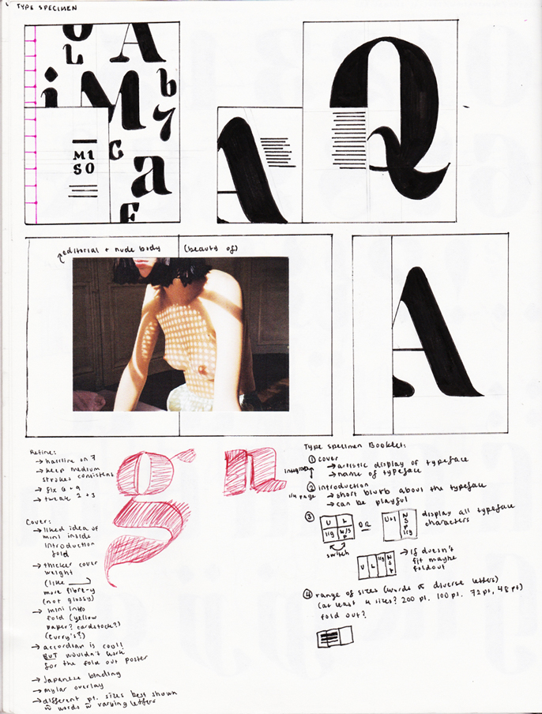
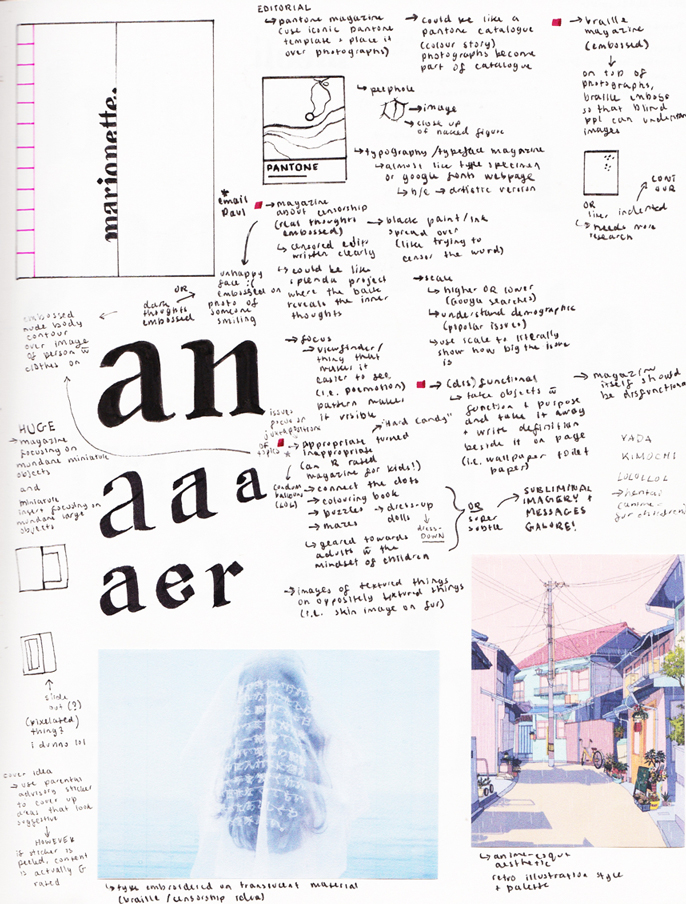
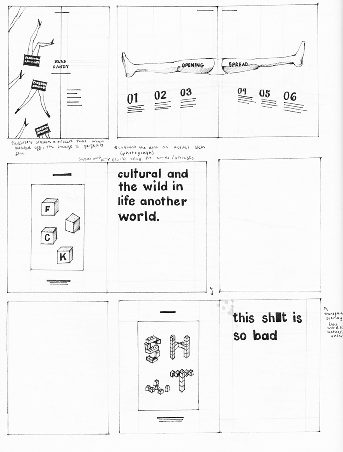
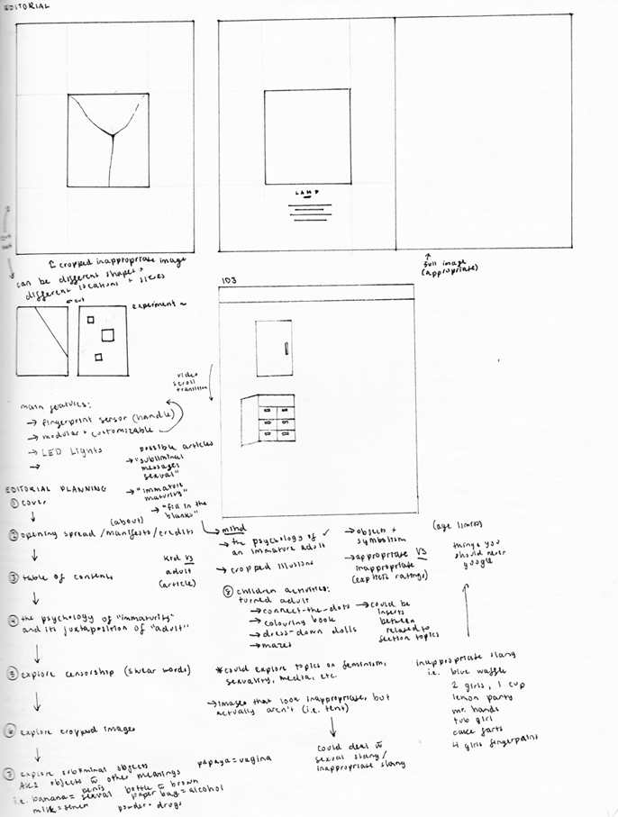
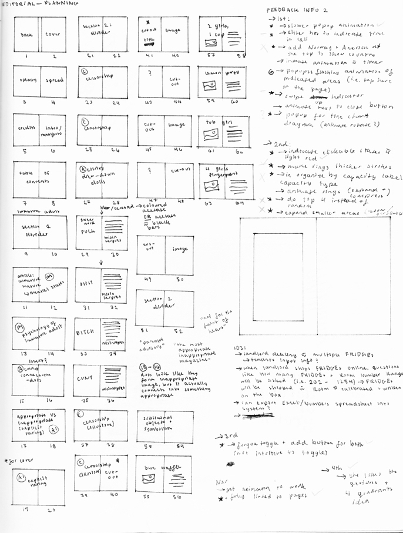
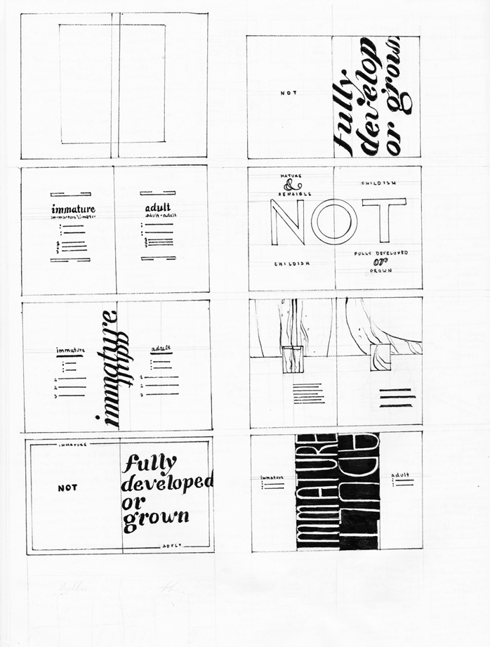
The Magazine
Dimensions
8 x 20 inches (spread)
 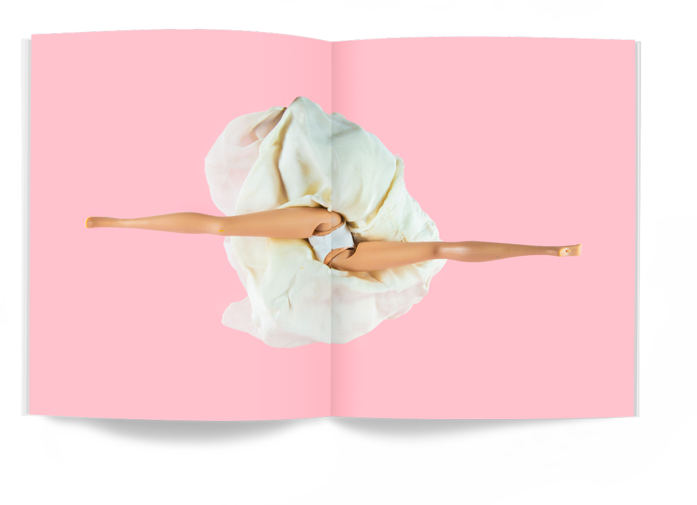
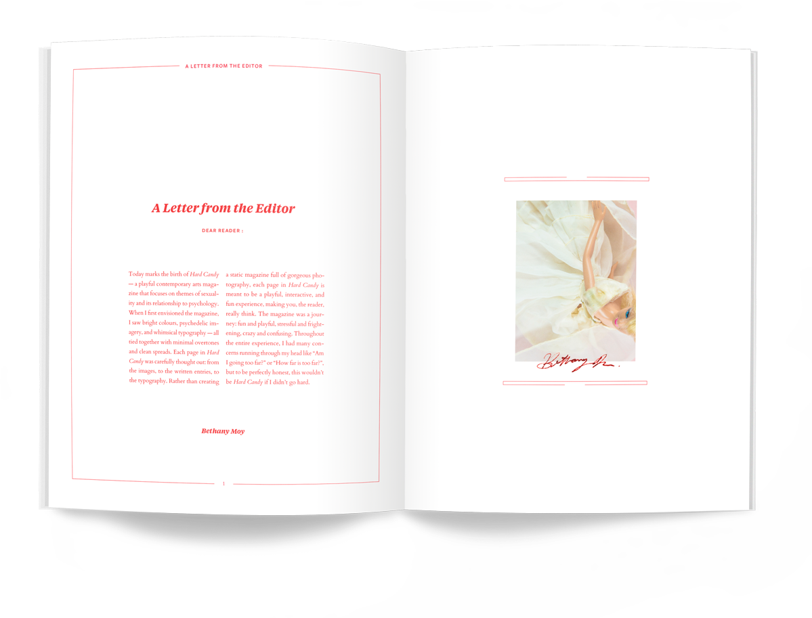
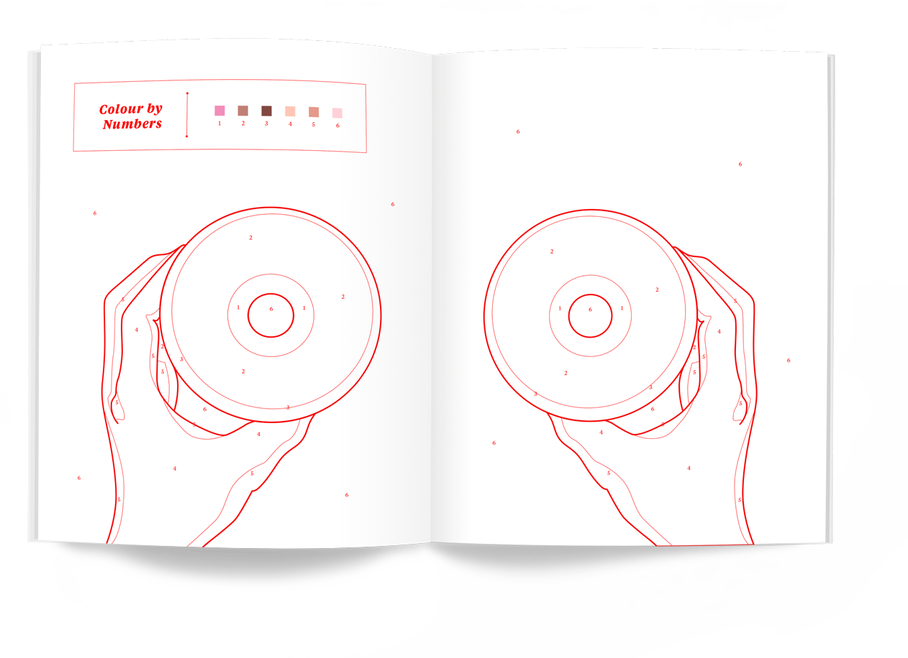
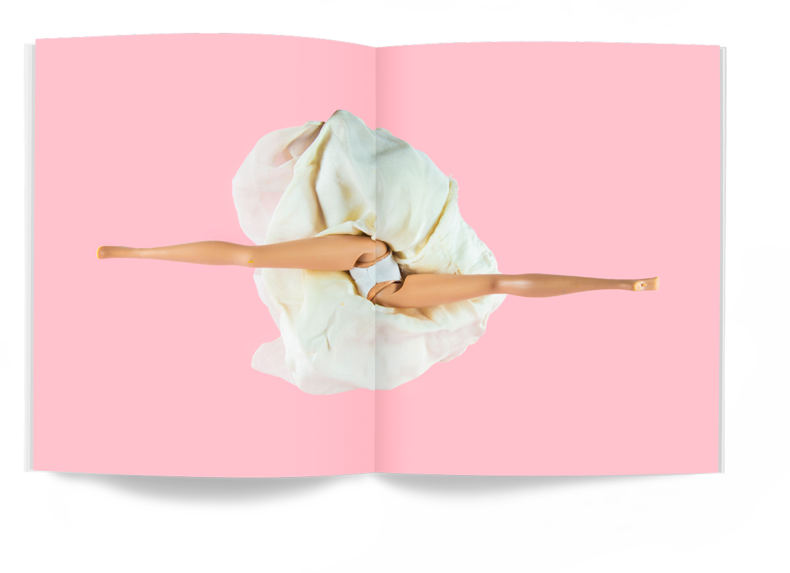
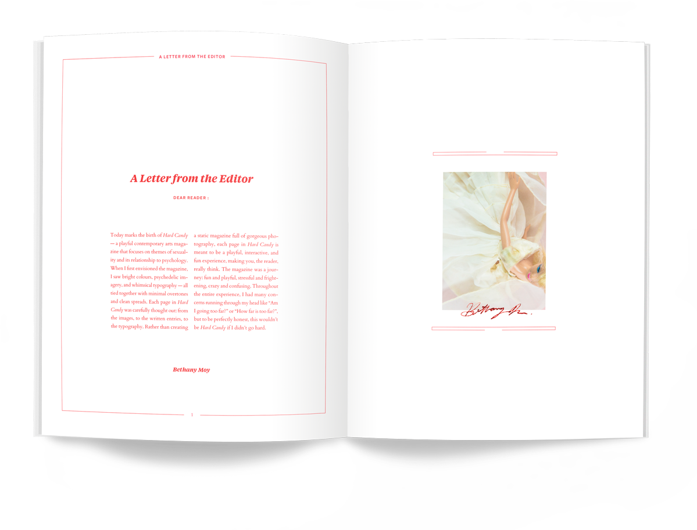
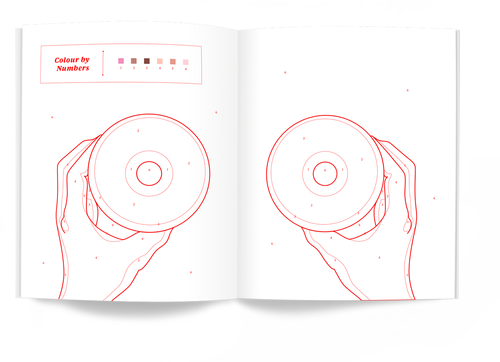
Section: The Immature Adult
Sexual Appetites
Moving from print to digital allowed me to expand on the information that wasn’t able to fit solely on the pamphlet. It also allows the user to compare and contrast data in multiple ways. Many touch gestures and animations were integrated to guide the user through the narrative in an easy and intuitive way.
Visual Illusions
Making Print Interactive
Moving from print to digital allowed me to expand on the information that wasn’t able to fit solely on the pamphlet. It also allows the user to compare and contrast data in multiple ways. Many touch gestures and animations were integrated to guide the user through the narrative in an easy and intuitive way.
Section: Censorship
Censorship
This section of the magazine deals with articles and photography related to censorship. I created typography with children's toys that suggests swear words. A layer of acetate is used to censor the words on the right page which causes the viewer to think that the words on the page are actually swear words.
Section: Sexual Illusions
Sexual Illusions
This section of the magazine deals with articles and photography related to sexual illusions. By taking away parts of the imagery, I suggest a sense of nudity with a layer of cut outs
Reflection
Next Steps
This magazine was challenging for me to set deadlines, schedule shoots, and coordinate everything from photography, to type, to layout. Although the images and content of the magazine are experimental, I believe that the typography could be more playful, especially when dealing with these topics. I would love to continue this project and expand on more content that explores this boundary between the mature and immature, and to create future issues that explore more content dealing with sexuality and psychology.
Other Work
Tempr
Mobile App, UI/UX
Humanizing Prison
Architecture in America
Information Design, Print, & Interactive